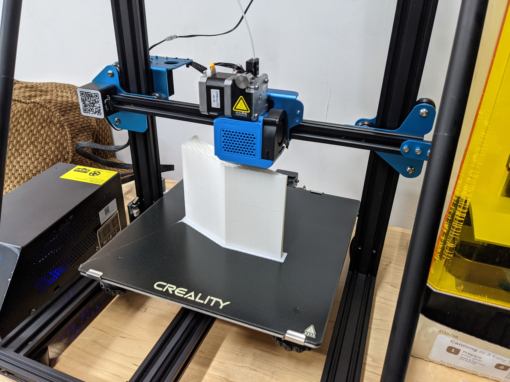
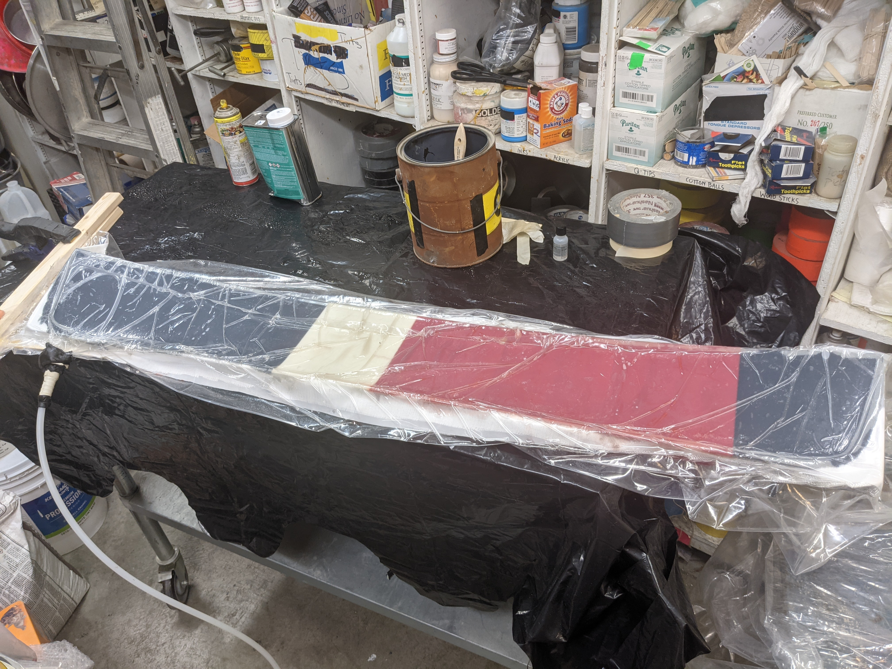
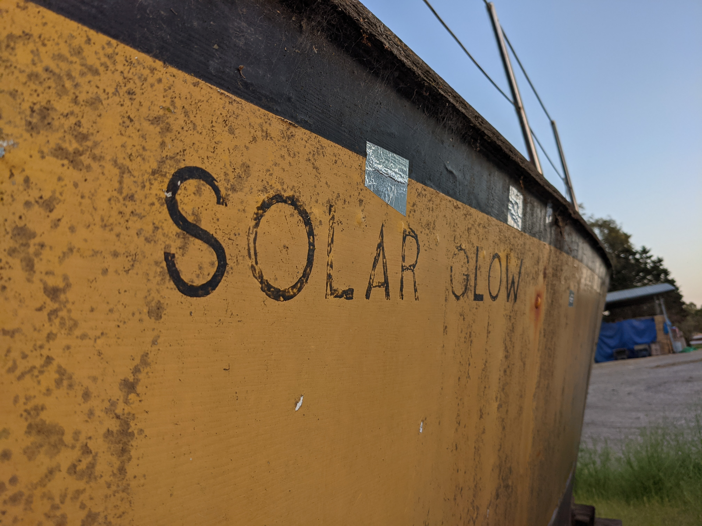
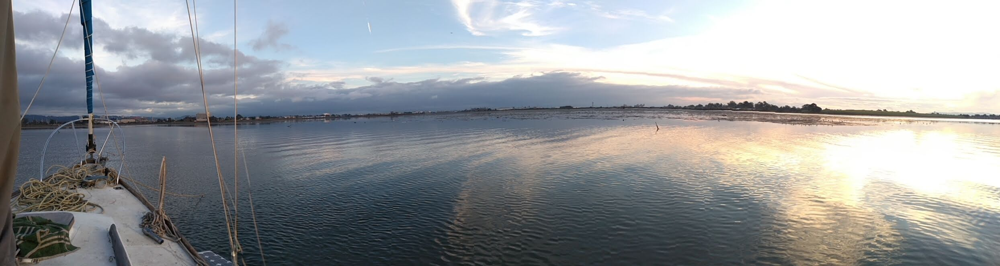
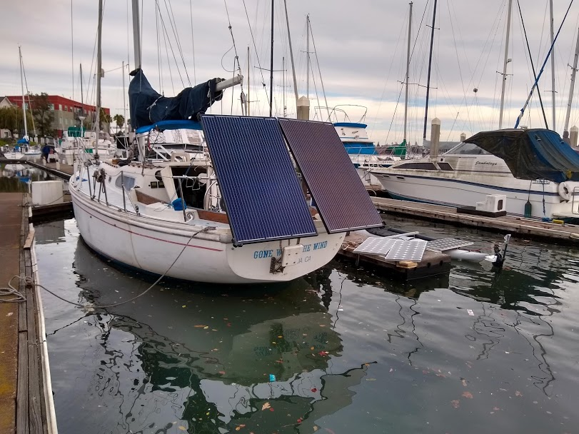
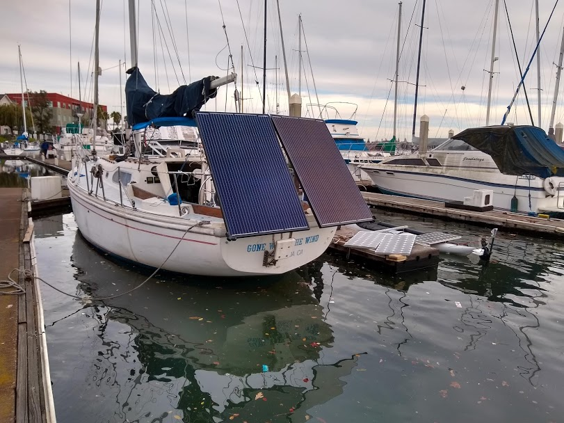
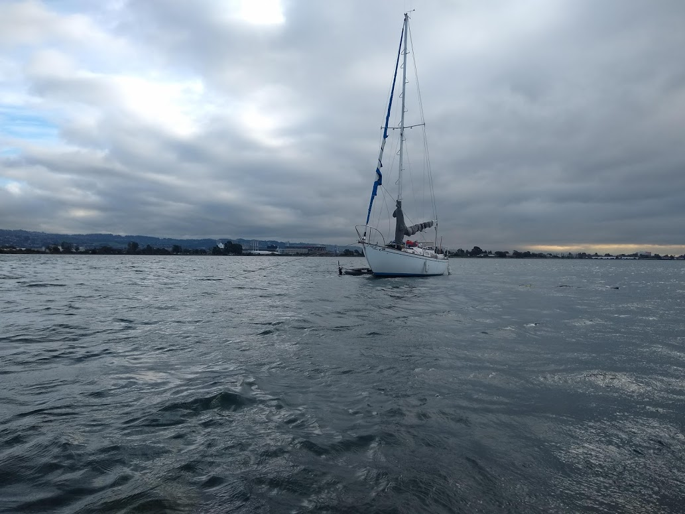

Another Week, Another Rediculous Plan
June 26, 2022 05:49
My despisal of multi-ton quadracycles continues, so I've decided to spend the next week as humble bicyclist. Since I am a van dweller, this means I'll need a different place to stay. A perfect opportunity for to get my feet wet bike-camping! I still have lots of projects to finish, so I'm thinking find somewhere to camp over the Golden Gate, maybe up near Mt. Tam! I've been biking a lot more recently, but it's mainly been demonstrating how much better shape I could get into, and I'm pretty hyped about setting up some future long-term bike trips!
Here's the plan:
- 星期日 do camping research, setup bike!
- 星期一 to 星期五 do the thing, only tenting it up, it may be painful!
Why?
- I know it will be painful, want to prove to myself I can do it
- I slightly don't want to do it, which is a good indication I should do it
- I have a sneaking suspicion that houses, vans, life-boxes isolate you from the world. I want to evaluate the limit of non-house dwelling.
- Get ripped (lol), feel good via exercise
- Need to get preped for longer bike trips
- Sunlight might fix my sleep schedule
Smart things
- Wear sunscreen
- Sunglasses
- Bike light
- High Viz
- Water Bottles
- Hammock w/ bug cover
In other news, the boat mold is turning out excellent. I love peel-ply. Gives a wonderfull fabric-feeling texture to the mold. My 3D printed mold isn't too smooth, it's making me wonder if I can use peel-ply on both sides of the mold. Also some super important notes when vacuum bagging: makes sure you use absorbative cloth (i used paper towels), otherwise the resin pools on the mold side and makes a thick gel layer, which is just useless weight and looks bad. Also I made a resin trap out of some pipe because didn't want to screw up the vacuum pump. Can't wait to make more stuff, this is a really fun art!

Future Sailboat Plans
June 24, 2022 07:23
I just posted three posts I wrote over the last couple months. They were sitting in my email as I plan to write an email bot to auto-post these when I send them to myself. Should eliminate the friction of opening github, and lets me write from anywhere. I'm also going to write more off-the-cuff, care even less about spelling, because I really want to post stuff and stop caring so much about perfection.
I designed and 3D printed a catamaran boat mold! Turns out, sailboats are just really heavy, and don't have enough surface area to run solar powered. Even if the boat is completely covered, with solar wings hanging off the edge, the max I could ever get is 10kw. OK for light wind in the Alameda channel, but not even close if you get out in the bay. Though I've puttered around out there on less.
My search for tri's and cat's was not going very well, and I was sub-happy to learn that many of these boats are overbuilt nonsense, filled with heavy and rediculous furniture. So I've opted to take the hard route and delete the idea of converting some 50's overbuilt cat, and instead increase my fiberglass chops! That's right, one day I'm going to cross an ocean in a homebuilt solar boat baby!
I decided first to build a scale model. A proper vacuum-bagged hull. I designed and 3D printed a hull (inspired by RC test flights video), but I'm cheap so I designed a mold that's symetrical on all sides so I can use half the material.

Much sanding, polyester resin, vacuum pump, 2 layers of glass, peel ply... BAM you got a hull. Can't wait to see if it releases from the mold tomorrow!!

Grand Unifying Theory of Solarboat Building
May 1, 2022 06:16
Had a little grand unifying theory moment tonight, or should I say this morning 😉, as I write this locked outside of an apartment waiting to follow in the next car that opens garage so I can grab my keys and finally fall asleep.
Realizing I have a perfectly fine sailboat I'm paying slip fees on, and another wood boat I built a few years ago with a friend from scratch, I came to the conclusion that I should build a 10kw outboard out of the ex-kittyhawk motors I happen to have access to!
Paired with some 100v batteries, bob's your uncle I've got myself a couple of electric boats and an excellent opportunity for some excersize lugging the outboard around.
I'm thinking I'll drop the mast on my sailboat, slice it down the middle like a rather elongated sandwich, then cut each piece in half to end up with 4 pieces I can bolt to the deck of the sailboat and lay solar panels on to make a 10kw array.
Trimaran can wait, I can use this boat as a test platform for the electric power system and as a living space so I can sell my van and aquire a bit of capital to make the project happen!
That's all for now, someone came out of the garage!
Presenting: ROSWM (Proof of Concept)
May 10, 2022
I present: ROSWM! An window manager for ROS2. What's it do? It listens to the currently published ROS2 topics running in your terminal windows and draws a directed graph between them! Like a living RQTgraph!
It's a proof of concept, written in python because Wayland bindings for python are surprisingly even weirder than xlib. Just wanted to quickly throw something together to improve my ROS2 workflow! Plz appreciate the lofi.
Features I'd like to add:
- save graph, process list & window locations to a ROS launch file, recall them later
- multiple desktops, multiple graphs for different parts of the robot like a kicad schematic
If anyone thinks this is a cool idea, feel free to make a PR to the repo or make suggestions!
https://github.com/imcnanie/roswm

Checking out a Santa-Barbarian Trimaran
Apr 25, 2022 15:38
I've got ambitions to cross the Pacific on a solar boat, so I'm looking around for seaworthy multihulls at a good price with no rig or engine. Found a nice Trimaran a few days ago. Good opportunity for a quick trip down to Santa Barbara to check it out! It's a 37ft Piver Searunner.
I'm starting to see these everywhere. Checked out another one in Alameda a few weeks ago, 25ft. Seems like some guy named Piver popularized these as wood core kits in the 70s?
So far I'm not impressed. These days, I think wood should never be a building material for a boat. It was fine in the 1700s back before we invented fiberglass...
But 50 years later every piece of wood on this thing is rotted. Which would be ok if it was just the deck. But the HULLS are rotted too. I did briefly entertain the idea of pulling out all the rotten wood and recoreing it with fiberglass, but it started to sound more and more like the ship of Theseus.
Now I know I'd much rather find something with a solid fiberglass hull. I want to build things that last a long time, not a big fan of engaging in the building of disposable objects!
Also... The boat was called the solar glow. if that ain't an omen....
New plan:
- make a scale model
- check all the local boat yards and marinas for free cats/tris in the bay


Week 1: Van project
March 29, 2022
I'm cheeting- it took 2 weeks, but I did completely redesign the van interior. Everything is built out of milk crates for maximum storage, cheapness and squareness! Still needs a lot of finishing and trim, rewiring, insulation, but I'm really happy with how much storage I have, it feels much more liveable.
Initial Sketch:

30 milkcrates from Urban Ore in Berkeley:

Final product:

Improvements
- Started Pomedoroing myself, makes context switching a lot easier
- Feels much more liveable
To Improve
- Only take 1 week to blog
- Still not finished, lots of details left
- Spent a lot of time planning my future sailboat project instead of doing this project
- Can't get distracted by the exciting sailboat project, need to finish stirfry machine this week!!
On dilly-dallying
Wednesday, March 16 2022
Today I found myself thinking about how much work I've been doing vs how much I feel I've accomplished. I feel like all my personal projects, except for music, are stalling out. I'm taking some time right now to critisize myself do a quick debrief to try to understand why. I also want to lay out a new strategy for finishing more projects.
Contributing Factor 1: Spreading myself too thin
Things I do right now: 3x Classes, music sessions every other day, intermitent subcontracting, personal projects. The misc category of my notebook takes up the most time for some reason, things like getting groceries, coffee, buying food, driving places, meeting new people. I need to set aside some focus time and distraction time.
Contributing Factor 2: Lack of Sleep
I've always had a horrible sleep schedule, and have experienced that when I do wake up early I can accomplish much more. I would love to wake up at 8 for the rest of my life, and go to sleep at 12. Being chronically sleep deprived makes me unexcited to do work and counteracting sleep with caffine results in brain fog. This can be mitigated with smaller caffine doses spread throughout the day and by taking breaks and doing pushups :).
Contributing Factor 3: Random adventures
I took a week long trip down the 1 in my van, spent some days in slab city, hopped a train. It was dope AF, but let's save the random adventures for the weekend.
Possible solutions
- Set aside all projects except the 1 project I want to focus on for that week
- Any distracting ideas acknowlege and set make a note for the future
- Come up with a weekly plan and generate a gantt chart from my calendar
- I need to be sure there are enough hours in the day to accomplish everything
- Self-critisize after completing my daily subtasks
- Set aside the weekends for socializing/random adventures/reading/excersize
Projects in the Queue
This is the schedule for my next 3 weeks. I will self-critisize every day on this blog. I will also take the weekends off for socializing/random adventures/reading.
- Finish my van (3/16/2022 - 3/23/2022)
- Day 1: Wake @ 8, coffee, sketch out concept, order by priority (windows, insulation, sink, kitchen counter, shower, bed/couch, swivel seats), gen gantt & post on blog
- Don't be limited by currently available materials, be artistic
- Stirfry gantry robot (3/23/2022 - 3/30/2022)
- clean/organize lab with milk-crates
- Solar powerd sailboat scale model (hobie 18) (3/30/2022 - 3/6/2022)
- Vegetable/meat dispenser/fridge (3/6/2022 - 3/13/2022)
- chinese language learning app idea (pimsleur 2.0)
- automated coffee
- auto post weight to blog, excersize routine, other embarassing things
- studio q vending machine
- studio q radio 2.0
- hydroponic system mini vegetables
- Solar powered catamaran (wait 'till an abandoned cat comes around)
Weekly Goals
Wednesday, December 15 2021
生活
- [ ] Nail down a better form of excersize
- [ ] elim all restaurants, processed food when eating alone
中文
- [ ] Do an iTalki class every day
- M [ ] T [ ] W [ ] Th [ ] F [ ] S [ ] Su [ ]
咖啡
- [ ] Procure 1kilo of dank coffee beans
- [ ] Add load cell to coffee robot
水培
- [ ] Automate lights, fans, pump, measure temp
音乐
- [ ] Learn Misty
Monday, December 1 2021
中文
- [ ] Take another Wing Chun class (explore other schools)
- [ ] Do an iTalki class every day
- M [x] T [ ] W [ ] Th [ ] F [x] S [x] Su [ ]
- Even though I didn't do it every day, I'm already noticing an insane improvement in my listening. Also trying to speak at chinese restaurants is wearing away what little embarrasment juice I had left.
咖啡
- [ ] Order and brew a 5gal batch of cold brew
- Need to procure from wholesaler
- [ ] Operate coffee robot 24/7
音乐
- [ ] Set up another gig
- [ ] Learn Misty Dwelling on the future is as equally useless as dwelling on the past
Weekly Goals
Monday, November 22 2021
Going to start posting some weekly goals here so I'm more inspired to do them!
中文
- [x] Take a Wing Chun class
- Wing Chun is a rather relaxing form of martial arts, it focus more on mastering a small number of efficient movements over hundreds of techniques. Truthfully, I chose Wing Chun because I'm completely inspired by the Ip Man Series and Bruce Lee. My hope is to find a school in the Bay Area the primarily teaches Chinese students, so I can make friends and practice my 中文。 Even the first technique I was taught seriously impressed me, running it for a while loosened up my hands a ton and I feel better playing guitar.
- [ ] Do an iTalki class every day
- Didn't do it even once!
咖啡
- [ ] Order and brew a 5gal batch of cold brew
- [ ] Operate coffee robot 24/7
- Didn't do either of these!
音乐
- [ ] Learn Misty
- Nope!
- [x] Get a solo set together
- This was the most sucessful part of the week. I was traveling all over California, but I still managed to make this happen, and perform the set with good success! The 12 hours on Amtrak was an extremely good time to focus on putting the set together. Remaining comfortable with performing, even in the face of potential failure and embarrassment resulted in a pretty consistent euphoria. An important element in staying happy is to remain stress free in potentially stressful situations.
I hope you have an excellent week, much love
Let's Delete Time
I've decided to run weekly experiments on things like food, sleep, excersise, and whatever else, in order to develop a lifestyle that can significantly increase my productivity and health.
There's also something new about the format, I'm going to implement these posts in the form of the scientific method, which will hopefully make things more relevant when evaluating which change was better and which was worse.
Sometimes, the experiment may take longer than a week, in which case, I'll do a mid week update on the blog post. Just like my Polyphasic blog, I'll have subheadings for the weekly updates in that case.
This week's experiment you ask? Let's delete time. What might it feel like to live in a timeless existence? I've already gone ahead and taped over the clock on my phone, deleted my lockscreen, and removed the clock from my computer, but every once in a while, a new clock unwittingly appears.
So I'm using Saturday, today, as a "time cheat day" to eliminate the extra clocks and set up a calendar for the week with 1hr warnings before I need to make it to my event. This is a compromise, but it will allow me to not blow off everything in my life immediately. Down the road, I may find alternatives to hard scheduling, and perhaps I can set up or write something like Calendy that allows people to schedule time with me and gives me adequate warning.
为什么/hypothesis
I think there could be stress benefits and improvements in prioritizing living in the moment over living for tomorrow. Having a "time cheat day" may force me to simultaneously think about my life from an objective place, and slice my weeks up to support long term goals.
Conclusion (11-21-2021)
This experiment concluded a week ago. The main thing I think that was better was not constantly watching the clock, minute by minute. People use to live by the clock tower- I think some buzzes from your watch to let you know the current hour would yield all the benefits of deleting time, but still make it possible to make appoints. I absolutely ruined my sleep schedule again by running this experiment, but I learned that I naturally will sleep 2hrs later every day. This leads me to next weeks experiment: it's submarine time baby! 超越时间
Gone Polyphasic
11-6-2021
Keeping these blogs short so I do them more often. After a month long experiment, I dropped my Polyphasic sleep schedule. It ultimately concluded after I flew back to honduras, because it was to hot to sleep in my van during the day.
Some rather detailed sleep notes!
Overall I enjoyed it very much, I was really productive during the night hours and sleeping more made the days feel relaxed. Contradictorily, I did sense my mood decrease and I was less excited about things than I usually am. But being more serious sometimes can be useful I suppose.
Going Polyphasic
8-3-2021 - Day 1
As persistent procrastination precipitates the looming demolition of my happiness, I stare blankly at my computer- The clock strikes 4 in the morning. I have an important deadline tomorrow, and I can't stop reading about polyphasic sleep.
Most nights I find myself with tasks unfinished, wondering if I should keep working or head in for a full 8 hours and resume the tasks in the morning. Usually, it's the former, and I'll end up cycling my sleep schedule around the clock, chasing the circadians until I'm waking up at 6 PM and all the coffee stores are closed. What a drag!
But tonight was different, it had to be, I'd delayed this project long enough and I was going to finish it. Like a message from [insert deity], Wikipedia gifted me the perfect answer: Everyman 3 Extended. A significantly more reasonable alternative to the Uberman Polyphasic sleep pattern, Everyman would replace my monophasic 8 hour sleep period with one 4.5 hour period peppered with 3 daytime 20-minute naps, making for 5.5 daily hours of sleep. And that was that! I worked until 6 PM last night and woke up at 10:30 AM.
And the project got finished! It may just be adrenalin, but it's the first time in a while I didn't feel stressed for time and had to search for things to do. It's why I'm writing a blog for the first time in almost a month!
8-5-2021 - Day 3
To be honest, I haven't done enough research into this Polyphasic sleep thing. It may be a horrible idea- it's been around for a while and there could certainly be some enlightening research on the subject that disqualifies it completely.
Knowing more is rapidly becoming a priority. I have read that most people before jumping into a polyphasic sleep schedule will plan out the transition ahead of time. I'm a bit too impulsive for that, but I will say that day 3 is going very well!
It's 3:38 in the morning as I write this. My sleep plan ended up looking like this:
This sleep graph is generated automatically from my calendar program by adding an [ALARM] tag to my TODOs
Red zones mark my sleep periods. This is a pretty messed up perversion of Everyman 3 extended, but it felt the most natural to me. I tend to push my sleep schedule more and more into the night until I'm sleeping at 6 and waking at 3. It's very unideal. Now, I can get the best of both worlds by sleeping at dawn and waking up at 10 AM to get an early start on the day!
Unexpected Consequences of Frequent Napping
By nap #7, I started to fall asleep quickly enough that I would actually dream. These are the kind of in-and-out of consciousness type of dreams I use to have after being totally sleep deprived during my early days in San Francisco. Put on a FlyLo album and drift through the textures of those beats.
I find that every time I nap (I've completed my 9th nap at this point) I relax enough that the best of the idea of the day will pop in my head. I need to cope with the thought of not writing down the idea until I finish the nap, and usually I've been able to remember it after the alarm goes off
Technology
An unexpected discovery from this experiment has been the time-to-sleep alarm. I've never before set an alarm when it's time to sleep, but it's fantastic! Even for a monophasic sleep pattern, I think it could be really helpful to be alerted when it's time to sleep.
It fits perfectly with my Digital Soviet Russia idea - even though I have the freedom to do anything and everything, I need to implement structure in my life to get the things I want to do done. The idea is to use technology to read my todos and automatically structure the day around them. With this sleep pattern I know exactly when I will have breaks, and partnered with Pomodoro, I can stay refreshed for the next task.
Fear of the Alarm
Something I've wondered about a lot is fear of the alarm. I read somewhere that the reason why people wake up a few minutes before the alarm clock rings is that the sound is extremely stressful to your brain. There must be a section of our brain that keeps time, and just seeing the notification "the alarm is set for 4 hours and 30 minutes from now" is enough to set this internal alarm clock just a few minutes ahead of the silicon one. I would love to experiment with this notification at some point and see what else I can trick my sleeping brain into doing.
When it comes to napping, some improvement could be made to the alarm. Knowing the alarm will ring so loudly and violently makes it harder to fall asleep. I bet alarm clocks are more abusive to our brains than we realize. An alarm clock should wake you up gently. Gives me ideas for a watch with a vibration motor that connects to my second brain, an auto-scheduling Pomodoro, and this polyphasic sleep timer.
Links
Theory of Permanent Discomfort
7-11-2021
Trotsky's Permanent Revolution, in a nutshell, is a theory on how to preserve classless society, also known as the Dictatorship of the Proletariat. Murdered by Ice Pick wielding NKVD agent Ramón Mercader at the order of fellow revolutionary Joseph Stalin, it is interesting to wonder whether Trotsky's ideas could have prevented the over-bureaucratization of the Soviet Union and consolidation of power that occurred after Stalin. Maybe, maybe not.
On a much lighter note, that kind of literature has become a seed for my Theory of Permanent Discomfort. This is part of my Second Brain project, building a project-based notebook also does time tracking, generates invoices, and helps me improve my productivity.
For a month now, I've been setting eight daily tasks for myself to complete. That's it! How hard can it be to complete eight tasks? Well as it turns out, somewhat hard to do consistently. Before I wrote this program, I didn't realize how often I was getting distracted by new ideas and projects, and while I haven't improved much in the last month, I now have metrics to measure my progress in this area. Every day, I set up tasks in my notebook:
A global task list automatically generated from each project's TODO list
As I check them off, a graph is generated that shows my progress that day and displays my average success rate for the previous two weeks:
Chart shows completed tasks in the last two weeks, and the average completion %
Now that I can measure my Target/Goal ratio, I can make tangible improvements based on my results. I learned from Keto that you can't make improvements without a way to measure progress. And as you can see I still have a lot of progress to make. After I make my goal of eight tasks per day, I hope to slowly shore up my productivity and in a year reach 16 completed tasks per day. I expect a critical piece will be managing context switching, which has improved significantly since I started to care about my notebook.
This brings us to the carne importante of this blog post, our dénouement: The Theory of Permanent Discomfort. Having run this experiment for a month now, I have noticed that I automatically poise tasks on the precipice of what is possible. I have consistently overreached and not made goals that I thought were attainable at the beginning of the day. So I have come to peace with the fact that I will not always make the goals, and allow the day to go uncompleted, even though I could modify the day's tasks to make me always succeed. Some days I find it exceptionally difficult to make all the goals, but having the metrics there keeps me motivated to make them.
This is Permanent Discomfort - to know that not all goals will be met and to use that bit of failure as motivation to achieve more the next day.
Building a Second Brain
6-19-2021
After listening to the excellent "Building a Second Brain" podcast, I decided to build my own second brain. In fact, this website is automatically generated from the brain, which in short, is my notebook. I won't explain in detail all the ideas of the podcast here, but some of my favorite things I've taken away from it are Projects over Categories and Slow Burns, or the concept of collecting ideas in notebooks whenever you have free time.
I wrote my whole album like this, randomly jotting down ideas for songs and critiques every time I heard it. I was left with so many more ideas that just needed to be implemented, rather than having to think of fresh ideas while making music. For someone interested in notetaking, I can't recommend the podcast enough.
After trying tons of notetaking apps, and an avid user of Google Keep, I've come to the conclusion that if you have the means (or not!), you should just write one yourself. You wouldn't want someone else designing your brain, would you? That almost sounds like...
I settled on these goals:
- Markdown files, directory structure
- _TODO.md file in each directory
- Calendar agregating todo lists, organize by date
- Invoice generator based on todos
- time tracking by typing eg. 18:00-19:00 in a todo
The directory structure ends up looking like this:
src/
gen_calendar.py
gen_invoice.py
reading notes/
future_projects/
current_projects/
finished_projects/
proj1/
proj1_TODO.md
README.md
monksevillair.github.io/
monksevillair.github.io_TODO.md
src/
blog/
espanol/
music/
transcriptions/
index.html
README.md
More info on the website later, but with this structure, if want to make anything public, I can move a project into the monksevillair.github.io directory and it will go live on the next push. Everything is tracked with git, synced to my phone with syncthing, although I'd like to pull and push from my phone soon.
Calendar App
I used Google calendar for a long time, and I still like it, but having it seperated from my TODOs was a huge barrier to having an effective calendar. I wanted to generate a calendar automatically from my TODO lists globally. gen_calendar.py automatically scans all the todo files
Invoice App
Many invoices and mucho dinero has been frittered as a result of my deep hatred for generating invoices. What better way to fix this problem than to generate them automatically from my todos? If I add eg. *18:00-19:00* to a TODO.md file, gen_invoice.py will add that todo to a global invoice maker
Where does this all run?
At the moment, in github actions. It's sick. The website generates and commits a new version every hr, which is how the background color changes. Eventually it will do other dynamic things. I use this workflow.
When editing locally I run this script which scans for files locally and runs the python scripts when a file changes:
find ./ | entr sh -c "python3 ../src/calendar_todo.py > calendar.html"
I plan to run these scripts on my Pixel 3a running Ubuntu Touch, which will also run the alarm and GPS tracking in my van. Soon there will be a map page logging my travels in my van, Allan Holdsworth.
Much more to come on this stuff, when it's more mature I'll make my second brain public, maybe it would be useful for someone! Shout out to the Second Brain podcast!
3DR Solo ESCs

3-14-2019
I use to work at 3D Robotics, and managed to hack every component of the Solo while I was there. I one point they purged all their old electronics and some of it went to me and some other intern friends. I got a ton of ESCs for the solo drone, and have been using them for any project that involves small brushless motors.
Pinout
PWM: white 5V: red , GND: black
Links
- Brushed ESC Firmware
- SimonK Brushless Firmware
Life on the Hook
5-1-2020
I got the bright idea to find a spot to park my sailboat somewhere in the San Francisco Bay and see how long I could live out there. The adventure lasted far longer than I expected and with it brought moments of peace peppered with short periods of dread and general wetness. This is the story of a sailor, sailboat, sailrights, and Sahalie.
I can tell you what brought us to do this: free rent. This is the Bay Area, the highest cost of living in the world. The year before I bought my first sailboat and set it up with an electric motor, partly to escape the high rent cost and mostly for the adventure. It was and excellent choice, and I scaled a serious learning curve getting that boat sail worthy.

A Small Survey With A Big Soda
My friend Big Soda, a fellow boat dweller and an incredible musician, joined me for the first day of surveying. Armed with an 8' PVC pipe, we set to probe out our target location in San Leandro Bay - a small bay that joins the south Alameda channel to the San Francisco Bay. We identified this location on USCG Chart 18649 as part of General Anchorage 9, meaning no restrictions for anchoring. I even called around the Coast Guard Offices and confirmed this was an OK spot to anchor long term! Alright!
The only caveats - much of the area is 1ft deep at low tide, with a few deep spots at around 7ft deep. Our boats have drafts of 6ft and 5ft. From our survey we found we had a 50ft diameter valley we could park our boats in and not strike ground. This isn't enough room to have good scope, so we decided we'd set up 4 large danforth anchors on the corners of the boats. This has the major disadvantage of not allowing the boats to swing into the direction of the current, putting a lot of force on the anchors and cleats. However, this area is pretty protected, and while we were there, we made it through a couple of 30mph wind storms with no dragging. But this method of mooring was absolutely a big unknown.
 

Patiently Preparing Allan Holdsworth's Red Herring
We need ropes, anchors, chain, solar, reverse osmosis, inverter, internet beaming, transport boats, food, refregeration, hot water. Welll - at least some of that. Our vigor was great for our productivity - but looking back we could have used a bit more time preparing. Hard to say though, part of the fun was using my battery powered soldering iron to finish the solar system while we were anchored. I ended up strapping two huge 295W Itek Residential Solar Panels to the back of my Sailboat. I got them from a local solar retailer that had a surplus of used panels - $100 with a warantee! Incredibly they fit perfectly in the back of my prius, and even came with stacking feet.
I installed a propane water heater for the shower, and we set off. Opening bridges with the VHF was an exciting experience.

30 Days and 30 Nights
We took off on the night of December 1st, 2019. High tide was against us, since we'd gotten a late start. At 3 knots we navigated the Park St, Fruitvale St, and High St bridges by the light of the moon and streetlights. It was loads of fun, but it takes focus to hold the boat in place while the bridge was opening under a quick tide. We took Big Soda's 1961 Seafarer 31 that night, since it had a shallower draft we could feel out our little deep spot and if we got stuck, maybe get stuck less. When we finally made it to our Google Maps markers from our survey, we dropped anchor and packed up for the night. We took we woke up several times that night to check our depth with a skillet tied to a rope, anchor tension, and our GPS drift. I can't recommend enough having an anchor alarm for this type of boating, it helps with peace of mind. But my god what a beautiful spot it was at low tide: Those little black spots were thousands of birds, and over the hours you could watch the land rise out of the sea and trap our boat in a puddle. At certain times it was treacherous. The metal stakes that marked the edges of the channel threatend to pop our inflatable dinghies when you couldn't see them at mid-tide, there were times you couldn't row against the tide, and when I did get stuck in the mud, stepping in it sucked in my leg up to my boot. Absolutely one of the best places I've anchored, and a hidden treasure of the bay area if you plan well.
Is that a helicopter?
Several days later I was woken up by a helicopter circling the boat, spouting unintelligible band-passed questions. I crawled up on deck and sat there looking up at it. Is that for me? Are the messing with me? Looking closer it was definitely a Coast Guard Helicopter - they probably they thought I was in trouble. After giving them several thumbs up they took off, but I was definitely concerned about what the hell they were up to. I took my dinghy to shore and later that day I gave a call to Coast Guard Island, which is right down the channel. They told me an SOS signal was being sent from my location - and they were making their way to my boat right now. There were no other boats around, and this made no sense, but I jumped back in the dinghy and planed over there. The Coast Guard Officers were super cool, they helped me tear apart the boat for a supposedly water activated SOS life jacket. I had torn the boat apart several times before, and I had the sneaking suspicion they just wanted to see if I had drugs.
Busted by the Cops
December 21, 2019. Big Soda and I get woken up by a man shouting "This is the Police" over the load speaker. We scrambled out on deck, and sure enough there was the East Bay Regional Park Police, and they asked us to board the boat. Initially I refused, but at some point I let them on (fatal mistake) and they ticketed me for a ripped life preserver. They also issued us an illegal camping permit. I showed them the USCG maps, that is was clearly marked as Anchorage 9, but they wouldn't have a bit of it. We were out February 1st, or they'd tow the boats. I made a jurisdiction map, and presented it to them, but they still wouldn't budge. I heard from one of the officers that out the people with houses on shore were complaining about us, and a woman from the parks department had been begging them for a week to get us out. Arg an excellent experiment matey, alas, we turn home and head for the motherland. 